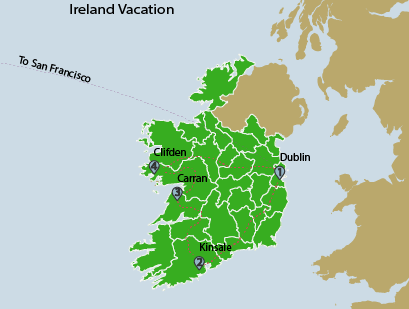

Lab 1
{kind=link}
Vacation to Ireland
A map representing a hypothetical vacation to Ireland which shows the airline route and vehicle routes around the country. Download Image
This page is a portfolio of various cartographic work conducted by Kevin Maurer at Humboldt State University. Kevin is a senior at HSU , pursuing a degree in Geography.
A map representing a hypothetical vacation to Ireland which shows the airline route and vehicle routes around the country. Download Image
A map of the capitals of the 48 contiguous United States to emphasize the use of typography and the four-color theorem. Download Image
This map shows various physical features of the contiguous United States. Download Image
This map depicts spatial data of locations of Big Leaf Maples and Hotels in the city of Portland, Oregon using a triadic color scheme. Download Image
This map shows the locations of breweries in Humboldt County. The basemap was creating using the MapStack program by Stamen. Download Image
Combines a greyscale hillshade, a DEM with a hypsometric tint and a bathymetry layer to create a terrain oriented map of Crater Lake National Park. Download Image
A re-vamped version of the Red and Gold Route map for the Arcata, CA bus system. Download Image
A map of the election results of the U.S. 2016 presidential election. Download Image
This map depicts the population of cities, towns and other census-designated places in Humboldt County, CA using graduated symbols classified manually to fit the data. Download Image
This StoryMap was constructed using KnightLab's StoryMap creator and documents three years of exploring the Arcata Community Forest and finding geocaches in interesting locations within the forest. Download Image
Drop me a line
{kind=link}
{kind=link}
{kind=link}
{kind=link}
{kind=link}
{kind=link}
{kind=link}
{kind=link}
{kind=link}